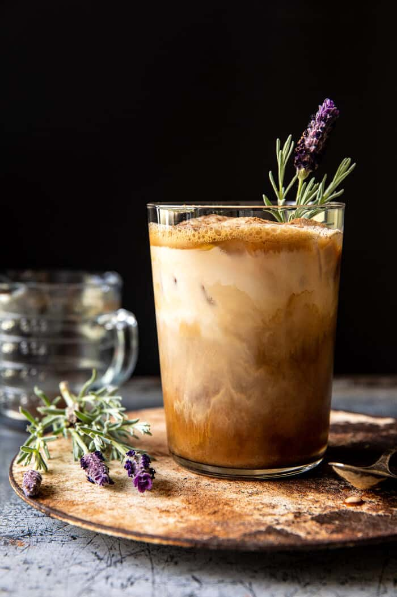

Iced Brown Sugar Latte

Description
The perfect bittersweet taste from the coffee and sugar.
Ingredients
- 4 oz of espresso
- 2 tsp of brown sugar
- 1/2 cups of milk
- ice
Steps
- Make 4 oz of espresso however you like, whether that's
with instant espresso and some water or freshly
ground coffee beans and a whole espresso machine.
- Pour the espresso into your glass.
- Mix in the brown sugar into the hot espresso.
- Pour as much ice to your liking in your glass.
- Stir until it's all one color.
- Sip and enjoy!
back to home